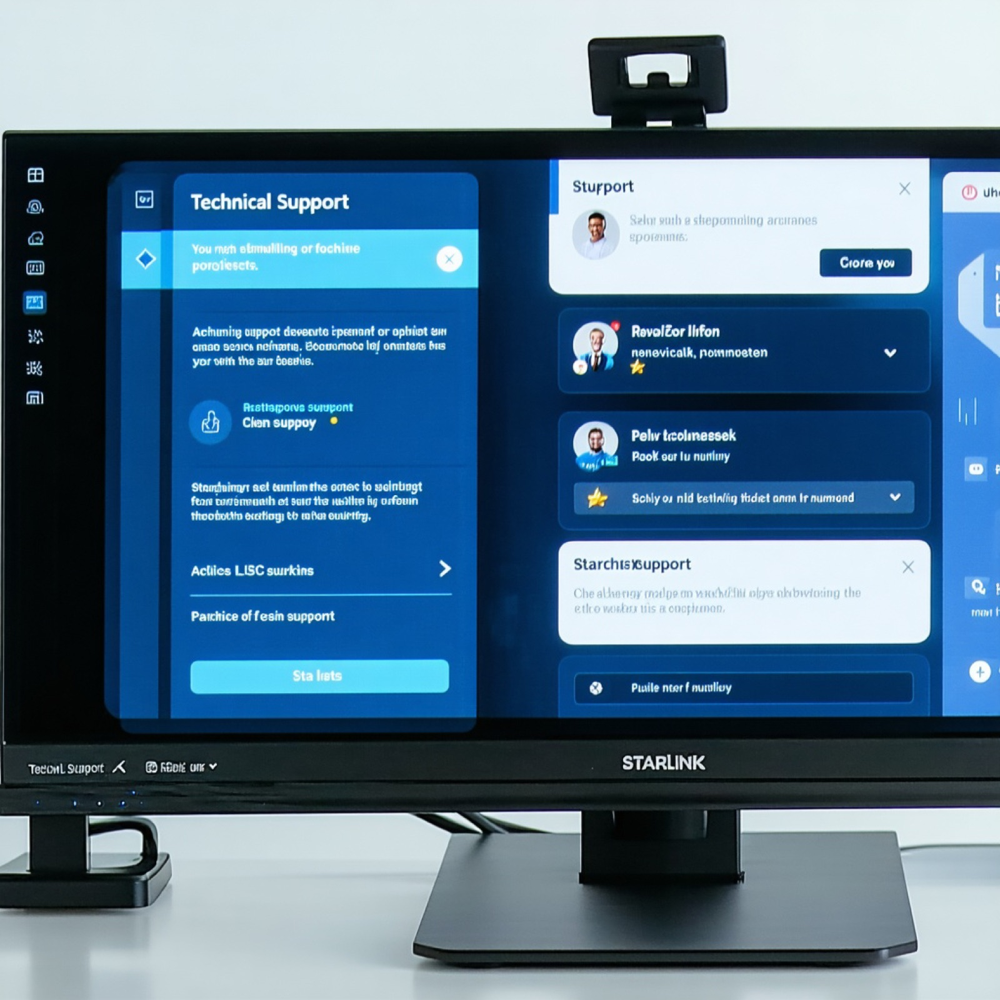
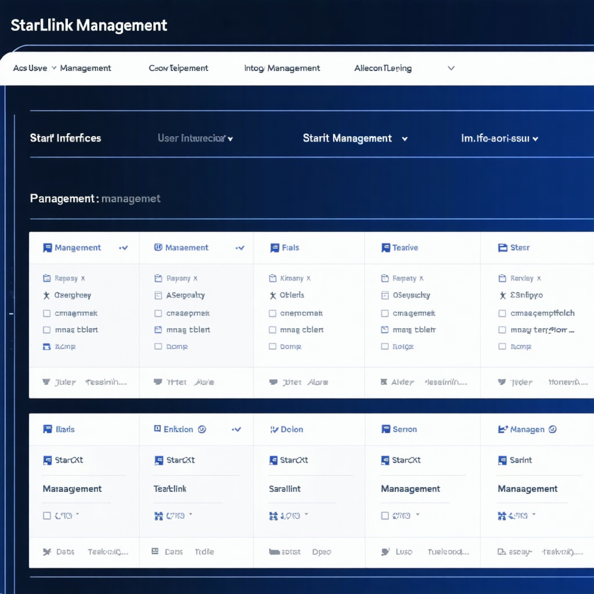
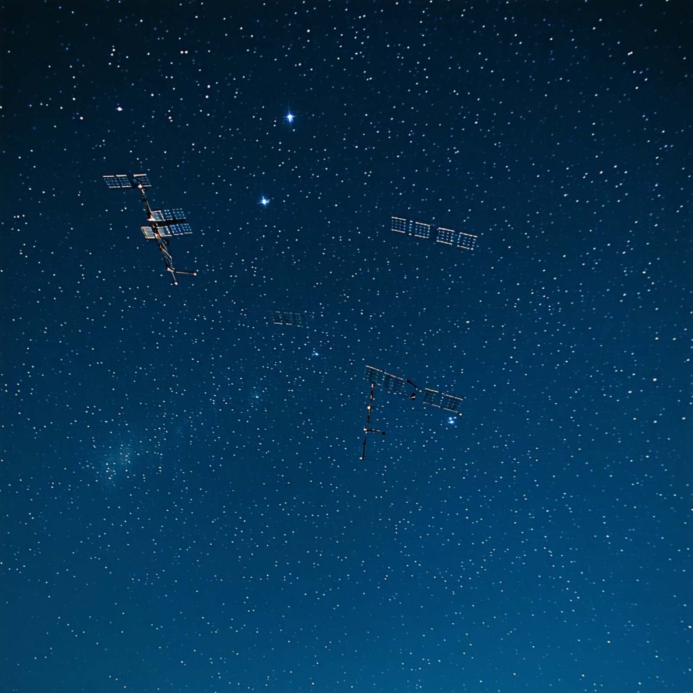

Verstehen von Starlink: Satelliten-Internettechnologie
Starlink hat das Ziel, weltweit schnellen Internetzugang in unterversorgten und abgelegenen Regionen bereitzustellen. Dafür nutzt das System tausende kleine Satelliten in niedriger Erdumlaufbahn, die gemeinsam eine flächendeckende Versorgung und deutlich geringere Latenzen als herkömmliches Satelliteninternet ermöglichen. Das Projekt startete 2019 mit den ersten Satellitenstarts. Mit dem weiteren Ausbau soll Starlink die globale Konnektivität verbessern und vielfältige Anwendungen unterstützen – von der privaten Nutzung bis hin zu Lösungen für Unternehmen und Notfalldienste.
Wie Starlink funktioniert
Starlink nutzt eine Konstellation von Satelliten in niedriger Erdumlaufbahn (LEO), um Hochgeschwindigkeits-Internetzugang in abgelegenen Gebieten bereitzustellen, die von traditionellen Anbietern übersehen werden. Dieser innovative Ansatz ermöglicht es Nutzern in ländlichen oder unterversorgten Regionen, zuverlässigen Internetzugang zu erhalten und geografische Barrieren zu überwinden, die die Servicebereitstellung normalerweise erschweren. Das wachsende Satellitennetzwerk ist darauf ausgelegt, Latenz und Bandbreite zu verbessern, was es für verschiedene Online-Aktivitäten geeignet macht, von Streaming bis hin zu Online-Gaming. Mit dem Start weiterer Satelliten verbessern sich die Abdeckung und die Leistung des Dienstes kontinuierlich, um die digitale Kluft für Nutzer weltweit zu überbrücken.
Zentrale Merkmale von Starlink
Die globale Internetabdeckung bezieht sich auf die Fähigkeit, von nahezu jedem Ort auf der Welt auf das Internet zuzugreifen. Dieses Konzept betont die Bedeutung, abgelegene und unterversorgte Gebiete zu verbinden, um sicherzustellen, dass jeder die Möglichkeit hat, von Online-Ressourcen und Diensten zu profitieren.
Geringe Latenzzeiten bei der Konnektivität sind entscheidend für Anwendungen, die Echtzeitkommunikation erfordern, wie Videokonferenzen und Online-Gaming. Sie minimieren Verzögerungen bei der Datenübertragung und sorgen für ein reibungsloseres und reaktionsschnelleres Nutzererlebnis.
Hochgeschwindigkeits-Internetzugang ist in der heutigen digitalen Welt zu einer Notwendigkeit geworden. Er ermöglicht es Nutzern, große Dateien schnell herunter- und hochzuladen, Inhalte in hoher Auflösung zu streamen und bandbreitenintensive Aktivitäten ohne Unterbrechungen durchzuführen.
Skalierbare Installationsoptionen sind unerlässlich, um die Internetinfrastruktur an die wachsende Nachfrage anzupassen. Diese Flexibilität erlaubt es Dienstanbietern, ihre Netzwerke effizient zu erweitern und mehr Nutzer sowie erhöhten Datenverkehr zu bewältigen, ohne die Leistung zu beeinträchtigen.
Die Vorteile der globalen Konnektivität gehen über den reinen Zugang hinaus; sie fördern das Wirtschaftswachstum, verbessern die Bildung und stärken die Gesundheitsversorgung weltweit. Wenn alle verbunden sind, steigt das Potenzial für Innovationen und Zusammenarbeit erheblich.
Die Zukunft der Internetverbindung birgt spannende Möglichkeiten, darunter Fortschritte in der Satellitentechnologie und der Ausbau von Glasfasernetzen. Diese Entwicklungen zielen darauf ab, die digitale Kluft zu überbrücken und eine stärker vernetzte Welt zu schaffen.
Der Einfluss von Starlink auf die Konnektivität
Der Start von Starlink hat die Breitbandlandschaft tatsächlich revolutioniert, insbesondere in ländlichen und unterversorgten Regionen. Durch die Bereitstellung satellitenbasierter Internetdienste adressiert Starlink die Herausforderung, zuverlässige Konnektivität dort bereitzustellen, wo traditionelle Infrastruktur fehlt oder nicht verfügbar ist. Dies hat Gemeinschaften mit besserem Zugang zu Informationen, Bildung und wirtschaftlichen Chancen gestärkt und die digitale Kluft erheblich überbrückt.
Installation von Starlink für einen Kunden
Dieser Leitfaden bietet einen Schritt-für-Schritt-Prozess zur Installation von Starlink, einschließlich der wichtigsten Schritte wie Durchführung einer Standortanalyse, Einrichtung der Ausrüstung und Verbindung zu Benutzergeräten.
Standortanalyse durchführen
Besuchen Sie die vorgeschlagene Installationsstelle, um den Standort zu beurteilen. Stellen Sie sicher, dass keine Hindernisse wie Bäume oder Gebäude das Satellitensignal blockieren. Bestimmen Sie die optimale Position für die Schüssel, um die beste Konnektivität zu gewährleisten.
Vorbereitung der Installationsausrüstung
Sammeln Sie alle notwendigen Installationsgeräte, einschließlich der Starlink-Schüssel, des WLAN-Routers, Befestigungsmaterialien und Werkzeuge. Bereiten Sie den Montagebereich vor und stellen Sie sicher, dass alle Komponenten einsatzbereit sind.
Installation der Starlink-Schüssel
Montieren Sie die Starlink-Schüssel sicher auf einem Dach oder Pfosten mit dem mitgelieferten Befestigungsmaterial. Streben Sie eine freie Sicht zum Himmel an, und verbinden Sie dann das Kabel der Schüssel mit dem WLAN-Router. Stellen Sie sicher, dass alles wasserdicht und sicher befestigt ist.
System einschalten
Schließen Sie den WLAN-Router an eine Stromquelle an und schalten Sie ihn ein. Warten Sie, bis sich die Starlink-Schüssel automatisch ausrichtet und sich mit den Satelliten verbindet. Dies kann einige Minuten dauern, während sie nach dem besten Signal sucht.
Benutzergeräte verbinden
Sobald das System mit Strom versorgt ist, verbinden Sie die Endgeräte der Nutzer mit dem Starlink-Netzwerk. Geben Sie das WLAN-Passwort an die Kunden weiter und helfen Sie ihnen, ihre Telefone, Computer oder andere Geräte mit dem Netzwerk zu verbinden.
Installation abgeschlossen
Die Installation von Starlink erfordert eine gründliche Standortanalyse, die richtige Einrichtung der Ausrüstung und die Verbindung der Endgeräte. Diese Schritte gewährleisten einen zuverlässigen Internetdienst für den Kunden.
Wissenscheck
„Starlink könnte das ländliche Wirtschaftswachstum vorantreiben, indem es die digitale Kluft überbrückt."
— SpaceX Pressemitteilung
Das Geschäftsmodell von Starlink
Das Geschäftsmodell von Starlink konzentriert sich auf die Bereitstellung von Hochgeschwindigkeits-Satelliteninternet über einen Abonnementdienst. Dieses Modell richtet sich an verschiedene Kundensegmente, darunter private Nutzer, die in abgelegenen Gebieten zuverlässigen Internetzugang benötigen, Unternehmen, die eine robuste Konnektivität für ihre Operationen benötigen, und Unternehmenslösungen, die auf die Bedürfnisse größerer Organisationen zugeschnitten sind. Der Abonnementdienst bietet Flexibilität bei Preisgestaltung und Service-Stufen, um unterschiedlichen Nutzeranforderungen gerecht zu werden und den Zugang zur Satelliteninternet-Technologie zu verbessern.
Starlink bietet eine praktikable Internetlösung für abgelegene und ländliche Gebiete.
Starlink in Aktion



Checklisten
Die fünf Checklisten begleiten den gesamten Installationsablauf – von der Vorbereitung bis zur Dokumentation.
1️⃣ Checkliste vor der Installation (Privat & Unternehmen)
- Arbeitsauftrag im Detail prüfen.
- Korrekte Ausrüstung für den Installationstyp (Privat oder Unternehmen) bestätigen.
- Sicherstellen, dass alle Werkzeuge vorhanden, funktionsfähig und aufgeladen sind.
- Verfügbarkeit der Montagematerialien (Dachmontage, Mastmontage, Wandmontage etc.) überprüfen.
- Bestätigen, dass das Fahrzeug über ausreichend Platz für den sicheren Transport des Starlink-Kits verfügt.
- Kundenadresse und spezielle Anweisungen überprüfen.
- Starlink-App öffnen und die Satellitenabdeckung für das Gebiet prüfen.
2️⃣ Checkliste für die Einrichtung vor Ort & Kundenkommunikation
- Kunden begrüßen und sich als SBPM Starlink zertifizierter Techniker von der Firma HELFERLINE vorstellen.
- Installationsplan erläutern und den Standort der Antenne mit dem Kunden abstimmen.
- Anfängliche Fragen zur Starlink-Leistung und zum Service beantworten.
- Standortbegehung mit der Starlink-App durchführen (Hindernisprüfung).
- Zustimmung des Kunden für die endgültige Platzierung der Antenne einholen (inklusive Unterschrift).
- Kabelverlauf bestätigen und Zustimmung einholen, falls Bohrarbeiten erforderlich sind.
3️⃣ Checkliste für den Installationsprozess
- Halterung gemäß den SBPM/Starlink-Spezifikationen befestigen.
- Antenne so installieren, dass eine freie Sicht zum Himmel gewährleistet ist.
- Kabel ordentlich verlegen und alle Eintrittspunkte wetterfest abdichten.
- Router an einem optimalen Ort für die Abdeckung platzieren.
- Antenne und Router verbinden; System einschalten.
- Erfolgreiche Aktivierung in der Starlink-App bestätigen.
- Geschwindigkeits- und Konnektivitätstest durchführen.
4️⃣ Checkliste für die Übergabe an den Kunden
- Starlink-App-Funktionen demonstrieren (Netzwerkeinstellungen, Geräteverwaltung).
- Dem Kunden die Ergebnisse des Geschwindigkeitstests zeigen.
- Pflege, grundlegende Fehlerbehebung und Support-Kontaktdaten erläutern.
- Antworten auf häufig gestellte Fragen geben (Latenz, Wetterbeeinflussung, Gerätebeschränkungen).
- Zufriedenheit des Kunden mit Platzierung und Installation bestätigen.
5️⃣ Checkliste für Arbeitsauftrag & Dokumentation
- Erforderliche Fotos machen (Halterung, Kabeleinführung, Antennenposition, Routerstandort).
- Sicherstellen, dass alle Bilder den SBPM-Qualitätsrichtlinien entsprechen.
- Formulare rund um den Arbeitsauftrag ausfüllen, Bilder hochladen und darauf achten, dass die Dokumentation vollständig ist.
Installations- und Dokumentationsprozess
Der vollständige Ablauf einer Starlink-Installation nach SBPM-Standard – von der Vorbereitung bis zum Abschluss.
Vorbereitung vor dem Einsatz
Zielsetzung: Sicherstellen, dass der Techniker vor der Anreise zum Einsatzort vollständig vorbereitet ist.
Vor der Abreise muss der Techniker den Arbeitsauftrag sorgfältig prüfen und bestätigen, dass er die korrekte Ausrüstung entsprechend der Art der Installation (privat oder gewerblich) besitzt.
Er muss verifizieren, dass alle Werkzeuge vorhanden, in gutem Zustand und aufgeladen sind, sowie die Verfügbarkeit der notwendigen Montagehardware (Dach, Mast, Wand etc.) bestätigen.
Der Techniker muss ferner sicherstellen, dass das Fahrzeug über ausreichend Platz und geeignete Bedingungen für den sicheren Transport des Starlink-Kits verfügt.
Erstkontakt und Inspektion vor Ort
Zielsetzung: Professionalität demonstrieren, Erwartungen festlegen und Vertrauen beim Kunden aufbauen.
Bei Ankunft muss der Techniker den Kunden begrüßen und sich als Starlink-zertifizierter Techniker durch SBPM Partners (oder in Ausbildung) vorstellen.
Anschließend muss er den Installationsplan erläutern, mit dem Kunden den vorgesehenen Standort der Antenne bestätigen und eine Standortinspektion mittels der Starlink-App durchführen, um potenzielle Hindernisse zu identifizieren.
Bevor er fortfährt, muss er die Zustimmung des Kunden für die endgültige Platzierung der Antenne und die Kabelführung einholen, insbesondere wenn Bohrarbeiten oder strukturelle Modifikationen erforderlich sind.
Installationsverfahren
Zielsetzung: Technische Genauigkeit und Einhaltung von Qualitätsstandards sicherstellen.
Die Installation muss gemäß den Spezifikationen von SBPM und Starlink durchgeführt werden.
Der Techniker muss die Halterung sicher montieren und sicherstellen, dass sie eben ist und eine vollständig freie Sicht auf den Himmel bietet.
Die Verkabelung muss sauber verlegt werden, wobei alle Eintrittspunkte wasserdicht versiegelt sein müssen. Der Router sollte an einem zentralen und offenen Ort platziert werden, um eine optimale WLAN-Abdeckung zu gewährleisten.
Nachdem das System angeschlossen ist, muss der Techniker die erfolgreiche Aktivierung über die Starlink-App verifizieren und Geschwindigkeits- und Konnektivitätstests durchführen, bevor der Auftrag abgeschlossen wird.
Kundenübergabe und Einweisung
Zielsetzung: Kundenzufriedenheit bestätigen und die ordnungsgemäße Nutzung des Systems gewährleisten.
Der Techniker muss dem Kunden die Hauptfunktionen der Starlink-App (Netzwerkeinstellungen, Geräteverwaltung, Signaldiagnose) zeigen und die Ergebnisse des Geschwindigkeitstests präsentieren.
Er muss auch grundlegende Wartungsarbeiten, erste Fehlerbehebungsschritte und die Kontaktaufnahme mit dem technischen Support erläutern.
Vor der Abreise muss der Techniker sicherstellen, dass der Kunde mit der Platzierung, dem Betrieb und dem Gesamterscheinungsbild der Installation zufrieden ist.
Dokumentation und Abschluss des Arbeitsauftrags
Zielsetzung: Den Qualitätssicherungsprozess von SBPM abschließen und den Arbeitsnachweis erfassen.
Am Ende der Installation muss der Techniker alle erforderlichen Fotos machen: Halterung, Kabeleintritt, Schüsselposition und Routerstandort.
Alle Bilder müssen Datum, Uhrzeit und Geolocation enthalten und den etablierten Qualitätsrichtlinien von SBPM entsprechen.
Anschließend muss er den Arbeitsauftrag vollständig ausfüllen und alle Dokumente hochladen. Nur wenn wirklich alle Voraussetzungen bei der Dokumentation erfüllt sind, gilt der Auftrag als erfolgreich abgeschlossen.